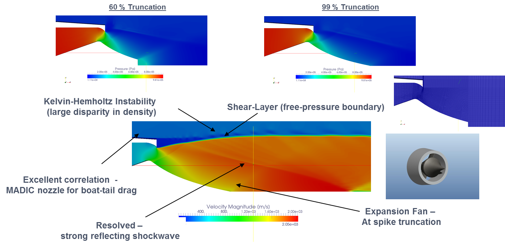

ARMSCOR, Flamengro
Flamengro is a Centre of Excellence for Computational Mechanics Modelling in the South African Defence Industry. The existence of Flamengro is due to a defined need from the DoD for such a functional capability within the DoD/Armscor environment. Flamengro is a division of Armscor Research and Development SOC Ltd.
Flamengro is a strategic asset to the DoD and it provides a cost effective and integrated support service to DoD system procurement and support activities which reduces the need for outsourcing to external parties. Flamengro is capable, through its being a fully funded institute, to maintain medium and long term technology acquisition horizons. Longer technology acquisition horizons lead to a more balanced capability for the DoD as well as more comprehensive application areas in terms of modelling and simulation support. Being a fully funded institute also ensures that Flamengro is entirely impartial and objective and that the DoD and Armscor needs and requirements are the only inputs shaping the capabilities developed and maintained at Flamengro.
Current research
- Research into Level Set Methods for 3D grain bun back in Solid Rocket Motors in conjunction with Rheinmetall Denel Munitions and Stellenbosch University;
- Development of higher-order spatial discretization schemes for SRM internal ballistics in conjunction with Rheinmetall Denel Munitions and Stellenbosch University;
- Development of solid propellant burn rate prediction in conjunction with Rheinmetall Denel Munitions and Stellenbosch University;
- Development of a multi-phase internal ballistics model for modular charges. This work includes the development of specialized discretization schemes for the handling of density discontinuities as well as specialized mesh handling techniques for the coupling of solid and gaseous phases;
- Development of a coupled solid fuel combustion CFD model; and
- Development of a CFD model with accelerating flows
Software: OpenFOAM & Python